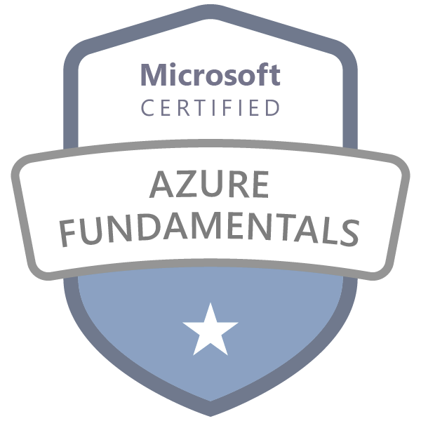
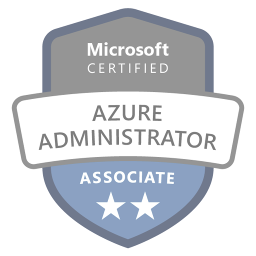
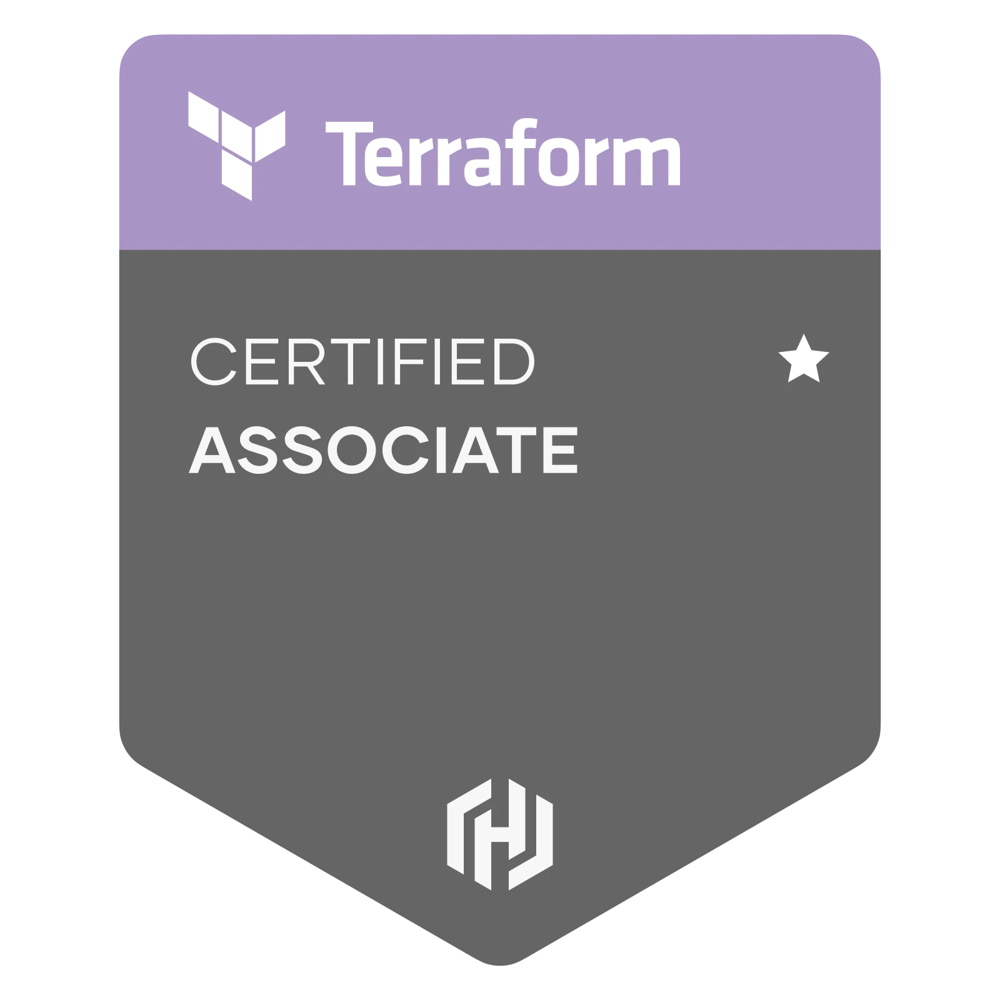
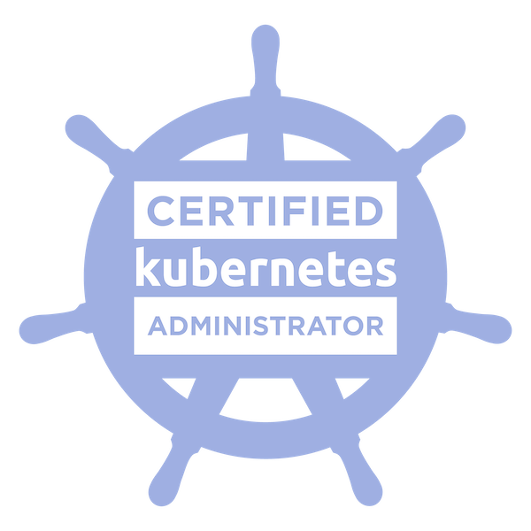

Who Am I?
I'm an IT professional with a strong background in Operations and System Administration within the gaming sector. My journey in the IT field is driven by a keen aspiration to become cloud engineer.
I possess experience in hybrid cloud PaaS and IaaS environments (Azure, AWS).
I stand out for my exceptional problem-solving skills, which I've developed through my experience in helpdesk support.
My ability to find and fix problems, make solutions work, and keep things running smoothly has been a key part of my success.
Cloud Resume Challenge
Azure Serverless CI/CD Website (Front end / Back End)
I actively participated in the Cloud Resume Challenge, where I successfully built this website as a dedicated platform to showcase my cloud computing skills.
I documented my journey, detailing the hands-on experience and practical implementations, to demonstrate my proficiency with cloud technologies. This experience has further enhanced my ability to contribute to innovative cloud-based solutions.
Here are some of the technologies I have used for this project:
- GitHub Actions CI/CD pipeline
- Azure Storage Static hosting
- Azure CDN Content delivery
- Azure Functions Event-Driven
- Dynamo DB NoSQL Database
At the outset, my Azure knowledge was quite basic, but the challenge quickly changed that. The goal was clear: create a personal resume website hosted on Azure. This practical task helped me grasp Azure's core services, such as Azure App Service, Azure Blob Storage, and Azure DNS. Setting up my Azure account was a breeze, and I was soon deploying my resume website using Azure services. Learning about resource groups, virtual networks, and Azure DevOps for CI/CD was both intuitive and impactful. I documented my progress thoroughly, ensuring I had clear records of my work and achievements:
Professional Experience
IT Systems Administrator
PTW
● Tested and deployed patches to minimize system vulnerabilities
● Monitored server health and performance
● Diagnosed and repaired hardware issues on servers and workstations
● Developed PowerShell scripts for automating routine tasks
● Ensured ticket tracking and closure in compliance with SLAs
● Provisioned accounts and access credentials in hybrid environment
IT Operations Assistant
PTW
● Played a key role in enabling remote operations amidst the pandemic challenges
● Optimized hardware and network layout for enhanced performance
● Streamlined inter-departmental support through ticketing systems
● Utilized PowerShell for task automation and infrastructure fixes
● Spearheaded site operations improvement projects
● Meticulous IT asset management
QA Tester
PTW
● Handled broad localisation catalogues from renowned gaming publishers, AAA titles
● Extensive experience in cross-platform validation of accurate translations
● Highly detail-oriented and meticulous in linguistic evaluations
● Excelled in IT-centric QA endeavours
IT Support Specialist
Johnston Carmichael Chartered Accountants and Business Advisers
● DELL KACE K1 fleet management
● DELL KACE K2 deployment and Sysprep
● Hardware management (MOBOs, GPUs, SSDs, etc.)
● Assisted IT department administratively
IT Technician
Thales Raytheon Systems
● NATO Air Defence & Control asset database auditing
● Cisco configurations
IT Consultant
Maxsodel
● Installed FOG, an open-source Linux image deployment server
● Managed system supervision, metrology, backup, and user access security on FOG
● Explored automated backup solutions for feasibility
● Assisted in ADDS migration/duplication and conducted user training
● Conducted cost analysis for antivirus software options
● Offered extensive desktop maintenance and troubleshooting support
Education
Higher Technician's certificate, IT Services to Organisations
Geoffroy Saint HilaireGrade: Technician Certificate in Systems and Network Infrastructure Solutions
Bachelor's degree, Information Systems and Business Management
Geoffroy Saint Hilaire
● Utilizing information systems to enhance operations.
● Analysing value and workflow through IT processes.
● Identifying security risks in technological advancements.
● Implementing automation for efficient management.
● Managing and merging database information.
● Assessing digitization's pros and cons.
● Impact of collective intelligence.
Certifications
-

CLF-C01
Fundamental understanding of IT services and their uses in the AWS Cloud. Demonstrated cloud fluency and foundational AWS knowledge.
-

AZ-900
🧠
-

AZ-104
🧠
-

TA-003
<->
-

CKA
<->